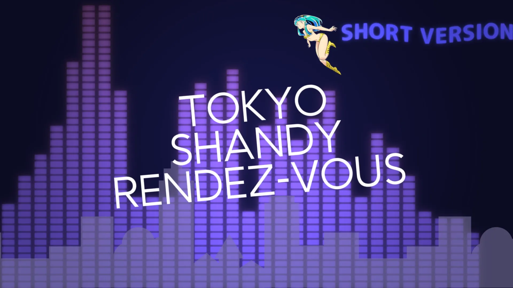
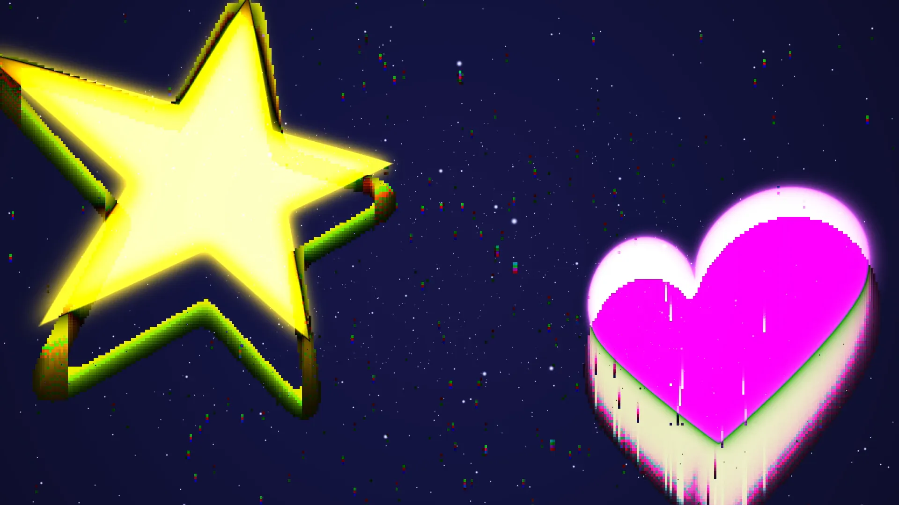
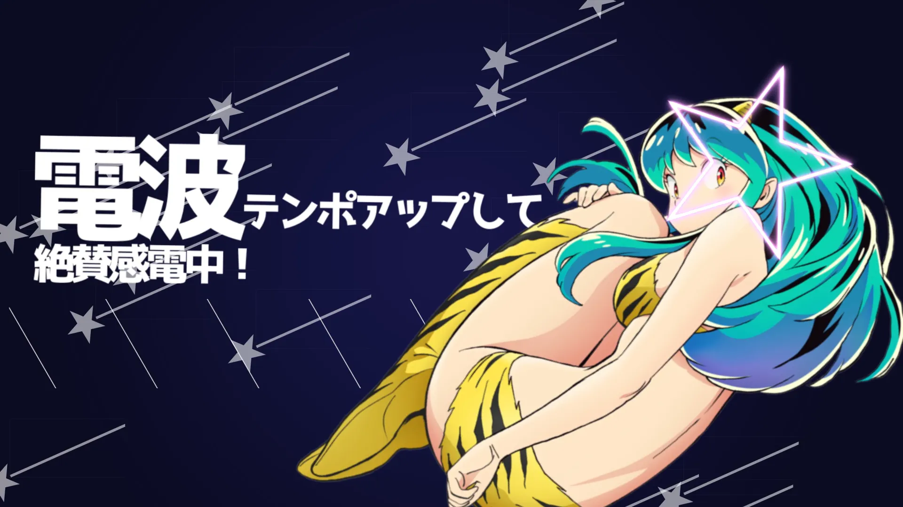
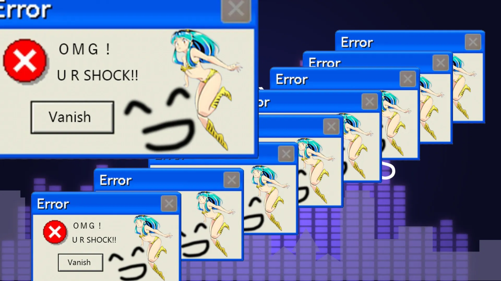
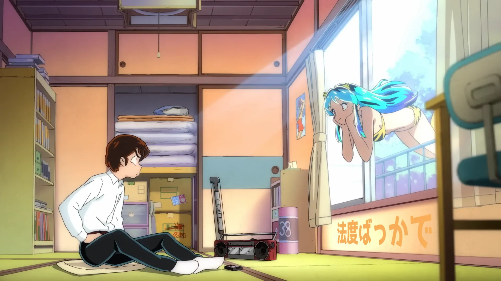

Solo MAD Movie Work
TOKYO SHANDY RENDEZ-VOUS - トウキョウ・シャンディ・ランデヴ / MAISONdes (ft. KAF & Tsumiki)
Anime MAD / Text Animation / Motion Graphics / Graphic Design / 3D Camera
2022.12.20 -【複合MAD】TOKYO SHANDY RENDEZ-VOUS (Short Version)
コンセプトは「夜の東京 × PC」。おしゃれでキャッチーなソングとの調和を考えて、色合いや編集のカット割り、リズム感を大切にした。
キラキラとした大都会の東京のおしゃれさを演出しているが、実はPCの画面を見て妄想しているだけというのがこの作品のオチ。
わかりやすい表現がいたるとこに記されている。
Production Process
この作品は依頼作品。有償依頼で、「楽曲のイメージをそのまま出してほしい」という依頼だった。その依頼をしっかりと理解したうえで、自分の世界も出していこうと考え至ったのがこの作品である。

ピクセル演出
ど頭の一瞬だけ流れるこのシーン。ハートと星にグリッチ演出を加えて、夜空を表現。PCやスマホなどの画面を夜空に見立て、この作品の舞台が大都会ではなくあくまで身近なものということを示唆している。

メインビジュアル的カット
この作品のメインキャラクター「うる星やつら」より「ラム」を活かしたメインビジュアルだ。
都会の街を駆け巡る
背景に流れていく図形たちはビルや家屋を表しており、街を駆け巡っているような演出に。

エラー演出
PCのエラーポップアップのようなこの演出。突如として「ラム」に心打ちぬかれたこと = 一目惚れを表現。ポップアップ内には「OMG! U R SHOCK!! (訳：あらま! あなた撃ち抜かれたよ!)」というテキストが書かれておりラムから送られているものとしている。

現実
後半部分は、「ラムに恋した」夢の世界から現実に引き戻すという演出をしている。「妄想していたキラキラなアイドルのようなラムはいないし、うまくいかない現実が襲ってくる」ということをポップに表現している。
Production Credit
題名 | Title
TOKYO SHANDY RENDEZ-VOUS (Short Version)
製作 | Create
Sheepe Fujitsugu
使用楽曲 | Music
トウキョウ・シャンディ・ランデヴ - MAISONdes (ft. KAF & Tsumiki)
製作ツール | Tools
◽️映像 | Movie - AviUtl
◽️デザイン | Design - Adobe Illustrator Photoshop
投稿 | Platform
TikTok, YouTube